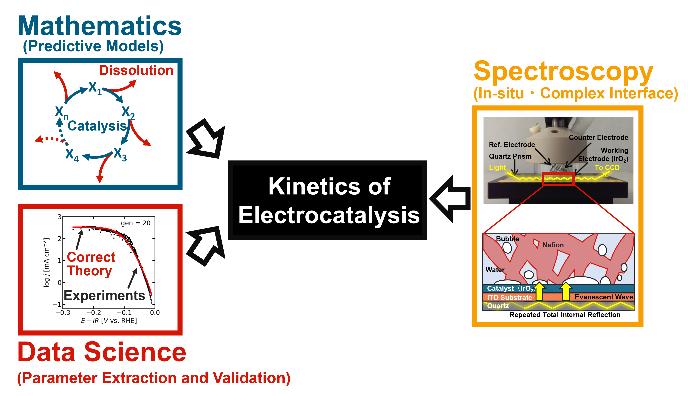

Join Our Research Group
The Mathematical Catalysis Research Team uses mathematics, data science, and experiments to understand the kinetics of electrocatalytic reactions. We know what happens when we throw a ball. We can predict the exact trajectory and where it will fall, at what time. Can we understand catalytic reactions at the same level? If someone tells us the initial conditions, can we predict how fast the reaction will proceed and when it will stop? These questions belong to chemistry, but answering these questions require the quantitative power of rate laws (applied mathematics) as well as data science to see how well the experimental data match the theoretical models. That's why the expertise of our group spans chemistry, mathematics, and data science.
Ongoing Scientific Questions
- How can microkinetic mechanisms of catalytic reactions be inferred from experimental data?
- How can experiments and theory be combined to make predictive models of catalysis?
- What kind of universal principles underly catalysis?
- How can chemical reaction network theory be incorporated to yield new data analysis algorithms?
- Are there physical limitations on the rate and longevity of catalytic systems?
- What kind of chemical reaction networks maximize efficiency and sustainability?

How we combine mathematics, data science, and experiments to understand the kinetics of electrocatalytic reactions.
Who Thrives in This Group?
Mentality
We are particularly interested in researchers and students who are eager to challenge conventional ways of thinking. But beware: This is not the easy path forward. Being accepted within traditional ways of thinking (aka survival) requires a normal workload. Demonstrating the power of a new scientific framework requires additional work on top, and will most often require you to constantly upgrade your skillset. If you are not excited about learning new skills and working across disciplines, you may find the environment frustrating rather than rewarding. But if you are one of the rare people who are excited by challenging problems and enjoy learning new skills to overcome them, then you might be a good fit.
We place curiosity and a willingness to learn as the most important criteria, above previous expertise or specific technical skills, because there will always be more to learn and more to do. No matter how much expertise you have, doing your best work requires learning more. That's why we expect a strong growth mindset from everyone, regardless of career stage or experience. Even Hideshi is open to direct criticism and honest feedback. Good ideas are valued regardless of seniority, background, or discipline. Are you excited to challenge conventional ways of thinking, despite the sacrifices involved? If you answered yes, then read on.
Expertise
The only requirement other than a growth mindset is a strong technical foundation in at least one relevant area. Are you:
- An electrochemist wanting to learn Python?
- A mathematician interested in real applications?
- A chemical engineer interested in mechanistic work?
- A theoretical physicist eager to model complex experimental systems?
- A data scientist needing some experimental data?
We don't expect expertise in all of these areas. In fact, many people here began with expertise in only one, and have gradually expanded their skillset to the point that they are now working outside the boundaries of their original training. However, applicants whose background overlaps only minimally with our research areas are encouraged to first explore one or more of these fields independently before applying.
We especially welcome applicants who have already acquired substantial skills outside their formal education or original field of training. In the age of Youtube and ChatGPT, teaching yourself something new has never been easier and the ability to learn independently will help you succeed and enjoy the interdisciplinary culture of our group. There are many online resources for fields such as Python, dynamical systems analysis, electrochemistry, machine learning, and chemical engineering, but it could be another field entirely if you feel our group can benefit from your expertise.
Our work includes:
- Electrochemistry and electrocatalysis
- In-situ spectroscopy
- Microkinetic modeling of catalytic mechanisms
- Mathematical modeling and dynamical systems analysis
- Numerical simulations and scientific computing (Python)
- Development of data analysis algorithms (Python)
What You Can Expect
- An open and honest environment dedicated towards scientific discovery
- Training in scientific reasoning, critical thinking, and quantitative analysis
- Opportunities to develop and lead independent research projects
- Collaboration across chemistry, engineering, mathematics, and data science
- Exposure to both theory and experiments
- Development of broadly transferable scientific and technical skills
- Mentoring to help you grow as an independent researcher
Prospective Applicants
Before contacting us, we strongly encourage you to familiarize yourself with our recent publications and research activities. When contacting us, please briefly describe:
- Your current affiliation and academic background
- Your research interests
- Which of our research themes interests you the most
- Relevant skills and experience
At present, we are generally not considering applicants purely focused on DFT or MD. We are not a traditional computational chemistry group, and we don't have workstations or access to GPU servers necessary for quantum chemistry calculations. We are open to candidates with experience developing new computational packages (grand canonical DFT, solvation models, etc) if those skills can be transfered to developing new mathematical or physical models of electrocatalytic reactions.
JSPS Postdoctoral Fellowship Applicants
Due to limited capacity, we are generally able to consider hosting JSPS Postdoctoral Fellows only when there is strong overlap between the applicant's research interests and ongoing projects in the group. Applicants are expected to have reviewed our recent publications and to explain how their proposed research aligns with our activities. Because of the volume of inquiries, we may only be able to respond to applicants whose interests closely align with our current projects. Same applies for Indian scholars applying via the JSPS Lotus program. Experimentalists should consider the ICYS program, which is an institute specific postdoc fellowship at NIMS.
Contact
If you believe your skills and interests align with our research, please check current openings here. You can also contact us through the Contact page if you have any questions.